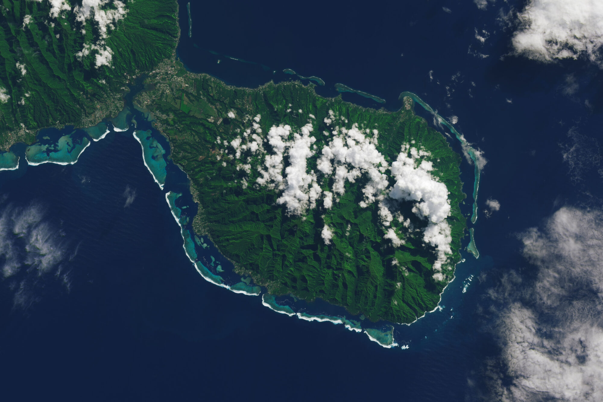

Since the first launch of the first Landsat, originally called the Earth Resources Technology Satellite (ERTS), on July 23, 1972, it has acquired millions of images and collected data on Earths land surfaces, oceans, and coastal areas for more than 50 years. The Landsat program is a joint program between NASA and the United States Geological Survey (USGS) that focuses on providing satellite images of Earth, that is used for global change research on geology, forestry, agriculture, and other land surface changes. Landsat 9, launched on September 27, 2021, has continued the legacy of previous Landsat satellites, monitoring changes in the ecosystem, images for emergency responses, disaster relief efforts, and land cover changes that can be viewed through the USGS website.
Animation of the timeline of the Landsat program, from Landsat 1, which launched in 1972, through Landsat 9. The hashed lines for Landsats 8-9 indicate the uncertain lifespan of the satellites. Landsat 7 was officially decommissioned on June 4, 2025. Landsat 6 failed to reach orbit on launch. https://svs.gsfc.nasa.gov/11433/#media_group_342166
Carrying on the record of its predecessors, the Landsat 9 offers scientists consistent data on Earth's changing environment. Such data is necessary to make comparisons between past observations and current observations to construct an integrated picture of the long-term environmental changes on Earth. The satellite provides precise imaging and robust data that enables efforts in ecological conservation, urban planning, and disaster prevention. The rising rates of global land cover and land use have had consequences on weather and climate change, human health, and society. Landsat 9's mission is built around a better imaging system that expands the ability to observe subtle surface changes with more accurate measurements of soil wetness, vegetation stress, and other changes on Earth. Besides the technological innovations, Landsat 9 is also intended to work alongside its predecessors to increase the coverage of Earth's observations and combine the data for a more comprehensive dataset for scientists.

Circular irrigated farm fields near Alexandria, Egypt, appear in blue in this image captured by the new Thermal Infrared Sensor 2 aboard Landsat 9. TIRS-2 measures surface temperature, so the cool irrigated fields stand out against the warmer arid lands. Image credit: NASA/USGS Landsat
The image taken by Landsat 9 of Alexandria's irrigated fields provides a clear visual cue of water consumption in the arid region. The vibrant blue color of the field, representing the coldness, directly maps active irrigation fields. Water in the soil results in cooler temperatures over irrigated, healthy crops, which can be detected by the new improved thermal sensor, TIRS-2. Warmer areas in the blue fields can be signs of issues with irrigation systems, system malfunctions, or uneven water distribution. The temperature information provided by Landsat 9 can be helpful in planning irrigation schedules since it allows farmers to identify areas that need irrigation, prioritize water allocation, and detect areas that can be over-irrigated or under-irrigated. The image shows the potential of the Landsat 9 in accurate temperature measurements that can be used for more reliable data for scientists and farm planners. The improvement from previous satellites allows scientists to observe global trends in land use, water availability, and the impacts of climate change.


Thermal images of Iceberg A-83 breaking away from Antarctica's Brunt Ice Shelf in late May. The picture on the left was taken on May 20, and the picture on the right was taken on May 22.
Observing surface temperatures from space can be difficult; however, with Landsat 9's new thermal infrared sensor, scientists can obtain a more accurate temperature record of Earth's surface. Even through Antarctica's polar nights, despite the lack of sunlight, the false-color image of the iceberg taken by the satellite allows scientists to track the movement of ice shelves and iceberg calvings. The false-color technique displays yellows and oranges to indicate warmer temperatures, while blue colors indicate colder temperatures. Such visuals help in monitoring and identifying polar climate trends and glacial dynamics over long periods of time. Not only have ice observations continued, but scientists and resource managers have utilized the temperature maps to locate the perimeters of active fires, where the new thermal sensor can penetrate the smoke that obscures the view, and help track agricultural water use. Landsat 9 will continue to offer reliable and impartial data about the shifting land cover and use on Earth as the population passes 8 billion, allowing for more studies of the impact of the growing population.
Landsat 9 captured this image of Tahiti, French Polynesia, on May 2, 2022. Image Credit: NASA Earth Observatory
Landsat 9 gas proved its usefulness as a tool to study atolls in the South Pacific Ocean. Its improved image technology gives scientists and researchers clear, details images of the ocean. With climate change warming the water, this puts clam and pearl farming at risk in French Polynesias atolls. These farms are an important part of their economy. Landsat 9s improved heat sensors allow for a more precise reading of sea surface heat changes in the ocean. This helps to check the health of coral reefs and detect marine heat waves. Combined with Landsat 8s data, Landsat 9 increases the temporal resolution of the data collected, enhancing the continuity of information that helps researchers monitor temperature changes and water quality. With more than 400 atolls on Earth, many lack sea surface temperature maps that can be crucial in our understanding of climate change's effects on vulnerable regions. Monitoring the temperature shifts with Landsat can help environmental managers adjust strategies that protect the ecosystem.